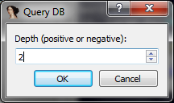

Moving reversing forward...
Installation
Toolbag requires IDA version 6.2 or greater.
The toolbag code should be unpacked to:
orC:\Users\username\AppData\Roaming\Hex-Rays\IDA Pro
C:\Documents and Settings\username\Application Data\Hex-Rays\IDA Pro
..as IDA executes the idapythonrc.py file located therein on load.
C:\Users\username\AppData\Roaming\Hex-Rays\IDA Pro>ls -l
total 8
-rw-rw-rw- 1 user group 211 Mar 30 20:27 AUTHORS.txt
-rw-rw-rw- 1 user group 2648 Apr 1 21:17 README.txt
-rw-rw-rw- 1 user group 47 Mar 30 20:27 __root__.py
-rw-rw-rw- 1 user group 153 Mar 30 20:29 __root__.pyc
drwxrwxrwx 1 user group 0 Mar 30 20:27 app
drwxrwxrwx 1 user group 0 Mar 31 19:20 base
-rw-rw-rw- 1 user group 1901 Mar 31 22:34 idapythonrc.py
drwxrwxrwx 1 user group 0 Mar 31 19:20 misc
drwxrwxrwx 1 user group 0 Apr 3 16:01 toolbag
drwxrwxrwx 1 user group 0 Mar 30 20:27 user
C:\Users\username\AppData\Roaming\Hex-Rays\IDA Pro>
You will also need the pre-built PySide binaries from Hex-Rays available to licensed users on their site: http://hex-rays.com/idapro/ida/windows_pyside_python26_package.zip. and of course Python 2.6 and IDAPython (comes with IDA) for Python 2.6.
Third Party Code
In order to enable remote debugger communication, download vdb from http://visi.kenshoto.com and place it in the toolbag\agent subdirectory as dbg.
Configuration
Configuration options are defined in toolbag\config.py. You can override any of these settings by creating a userconfig.py in the same directory with simply a dictionary named options, like so:
options = {
# default tabs enabled
'enabled_tabs' : ["File System", "Pathfinding"],
# hotkeys
'history_hotkey' : 'Ctrl-H',
# aesthetics
'font_name' : 'Tahoma',
# misc
'editor' : 'C:\\windows\\system32\\notepad.exe',
# milliseconds to poll queue
'queue_interval' : 3000,
# path finding colors
'path_coloring_enabled' : True,
}
Platform Notes
This is all very windows-centric code. Also, it's only been tested heavily on IDA 6.2 disassembling x86. Basic functionality has been confirmed to work on PPC, MIPS, x64, and ARM.
!! IMPORTANT !!
If you want to load another IDB and use toolbag, close IDA entirely and then open your new module and load the tool. If you don't there are some state issues we haven't worked out yet that will screw things up.
Instantiation
Toolbag must be imported once you load a module in IDA. We recommend you wait for IDA's auto-analysis to finish before importing our code. When IDA shows "AU: idle" in its status bar on the bottom left of the UI, go ahead and import toolbag via the Python command line within IDA.
When you import toolbag for the first time, it begins creating a SQLite database in the same directory as your IDB. You only have to do this once. When you import toolbag on subsequent loads of your IDB it should find the .DB file it generated and instantly fire up the toolbag UI.
When creating the initial DB file, toolbag iterates over all the functions in your module and inserts edge records into our SQLite database to indicate when a function calls another. Our code also either adds a new segment to your IDB (whose name is specified in your options as 'segment_name') or creates a new netnode, depending on what the value of 'file_system_type' is. We'll get to the filesystem and what it is used for later. For the segment file system implementation details, please see our blog post on the topic.
Here's the sample output of toolbag run on calc.exe for the first time:
Python>import toolbag
[*] Initializing toolbag
--------------------------------------------------------------------------------
[*] Options:
user_scripts_dir => C:\\Users\\aaron\\AppData\\Roaming\\Hex-Rays\\IDA Pro\user\bin
dev_mode => False
func_path_color => 16711935
history_color => 21760
highlighted_background => darkgreen
file_name => calc.DB
coloring_enabled => False
history_hotkey => Ctrl-Space
bb_path_start => Ctrl-Shift-S
enabled_tabs => ['File System', 'Queues']
segment_name => .zip
create_mark_hotkey => Alt-M
full_file_name => C:\tmp\sample\calc.DB
font_name => Courier
font_size => 8
path_start => Ctrl-S
path_end => Ctrl-E
background_color => gainsboro
verbosity => 10
highlighted_foreground => white
queue_interval => 1500
path_coloring_enabled => False
db_location => disk
editor => C:\windows\system32\notepad.exe
jump_mark_hotkey => Ctrl-M
bb_path_end => Ctrl-Shift-E
syntax_coloring => False
font_color => black
queue_reminder => 6
toolbag_dir => C:\\Users\\aaron\\AppData\\Roaming\\Hex-Rays\\IDA Pro\toolbag
remote_host => 192.168.1.51
segment_size => 2097152
bb_path_color => 255
--------------------------------------------------------------------------------
[*] fs.py: didn't find an existing segment, making a new one.
[*] segment.py: there is room above current segments
5. Creating a new segment (01060000-01260000) ... ... OK
[*] __init__.py: loading DB file from disk
[!] Unable to load the database file on disk at C:\tmp\sample\calc.DB
[*] Creating a new database file on disk
[*] db.py: Creating a new DB file
WARNING:root:defaulting to maintenance account (session id 0)
[*] Successfully created 4 new functions
[*] db.py: Processing 0x0100a455 (250 of 1933)
[*] db.py: Processing 0x01012cf5 (500 of 1933)
[*] db.py: Processing 0x01018506 (750 of 1933)
[*] db.py: Processing 0x0101f639 (1000 of 1933)
[*] db.py: Processing 0x01032406 (1250 of 1933)
[*] db.py: Processing 0x0103b0a8 (1500 of 1933)
[*] db.py: Processing 0x010447a7 (1750 of 1933)
[*] db.py: Processing 0x0105070a (1933 of 1933)
[*] Failed to process 9 functions
[*] Successfully processed 1924 functions
[*] No longer any data in the key store: File is not a zip file
[!] Tried to load a file default.sess that may not exist
Note: the "Failed to process 9 functions" is usually due to IDA analysis issues and is not critical. Also, the "Tried to load a file default.sess" is not an error in this context.
Usage
The Toolbag UI
When the toolbag UI launches you will be presented with a dockable widget that looks something like this:
{kind=link}
You can drag this widget around and dock it wherever you'd like, or leave it free-floating:
{kind=link}
The UI has several tabs available to you. The ones shown can be configured by the 'enabled_tabs' option in userconfig.py. Additionally, you can enable or disable a tab via the View menu option (some tabs are required and cannot be disabled):
{kind=link}
The History Tab
The history tab is used to keep track of code locations you've marked as interesting (not to be confused with IDA's marks). To add an item to the history view, simply hit the key combo defined by 'history_hotkey'. The default is Ctrl+Space. When you hit this combo a new entry will appear in the first pane. Additionally, if you 'coloring_enabled' set to True the basic block will be colored the value of 'history_color'.
When you add a location to the history view, the SQLite database is queried to determine child-parent relationships between the function you added and any others currently in the history's pane. So, if you add a child of a function already in your history view it will be relocated as such in the pane:
{kind=link}
Adding parents will relocate the items appropriately. Any of the entries in the tree can be clicked and will result in IDA jumping to its address. We've found that these graphs visually help us better understand code flow when reversing:
{kind=link}
You can also clear the tree with the Clear History button. You can save the history for transferring to others or locally using the Save History button (we'll get to how this works later).
The Show Strings and Show Imports buttons will, upon a press, toggle new panes that show the imported functions or strings referenced by any child in a specific subtree. A screenshot probably best demonstrate this:
{kind=link}
Note that the new panes have a column Caller which specifies which of the children below the currently selected one called that import or referenced that string, and the relevant address.
If you right-click any item in the first pane you can query the database for nearby functions:
{kind=link}

{kind=link}
This queries the database for functions within 2 calls from the selected one and displays a new, dockable, widget:
{kind=link}
You can also supply a negative depth to display callers:
{kind=link}
As you may have noticed, you can search the disassembly of any of the functions listed (regex is supported via the checkbox, colors can be changed via 'highlighted_background' and highlighted_foreground'):

The last thing to mention about the history tab (for now) is that whatever tree is present in the pane when you quit IDA is automatically saved and restored next time you open your IDB and import toolbag. That was the default.sess error that was shown when toolbag was first launched. As it was the first time running the tool, there was no default view to load.
Marks
By default, toolbag overrides IDA's marking system. This can be changed by adding new values for the 'create_mark_hotkey' and 'jump_mark_hotkey' keys in userconfig.py. When toolbag is running, if you hit the mark key combo you'll see this dialog:
{kind=link}
The toolbag marking system allows you to specify an optional Group which you can later sort on. This is useful for keeping track of reversing sessions, or which marks were added by who (if you're collaborating).
When a user invokes the key combo for jumping to a mark, the toolbag UI will switch focus to the Global Marks tab which contains click-able entries:
{kind=link}
Toolbag also introduces the concept of Local Marks. Basically, if you are inside a function that is currently in your history tree and there is a mark within that function, it will be displayed in the pane below the history tree, like so:
{kind=link}
It should be noted that there is no difference between local vs global marks, just how they are displayed in the UI. Also, the marks are not stored in the IDB and are not tied in any way to IDA's marks. Instead, they are stored as attributes inside the SQLite database.
Finally, you can delete any mark entries by right-clicking them and choosing Delete.
Merging
You can merge multiple .sess files (trees) into the History Tab. As an example, shown below we will load test.sess and test2.sess independently so you can see their contents:
{kind=link}
{kind=link}
{kind=link}
{kind=link}
The above was just to show you the contents of those sessions so that the resulting merge has some context. At this point, we'll clear the history tab via the Clear button and go ahead and merge test.sess and test2.sess from the file system tab's right-click context menu:
{kind=link}
Here is the resulting merge:

Comments
Comments are transparently hooked when toolbag is loaded using idaapi.UI_Hooks. When a user attempts to add a comment (repeatable or otherwise) the normal IDA popup is presented and everything behaves as IDA normally would. What goes on behind the scenes is that Toolbag saves the information to the file system. This allows the user to push comments to peers from the file system tab's right-click context menu (see the Filesystem section for more information).
The receiving user can apply the marks received using the same right-click context menu (via the Apply option). In order to not clobber any comments they may already have, a new UI pops up showing any potential conflicts:
{kind=link}
{kind=link}
Entries in this UI can be selected individually via Ctrl, Shift, or the Select All button:
{kind=link}
When the Apply button is pressed, the comments are applied to the user's IDB:
{kind=link}
Soon this will also be supported with stack variables, arguments, function names, and location names.
File System
Toolbag uses a pseudo-filesystem for storing various... things. When toolbag is initialized there are two ways it can initialize the FS. If the configuration option 'file_system_type' is set to 'segment', the code will create a new segment (whose name is configurable by 'segment_name') that contains a 4-byte header and a ZIP file. You can read a bit about the implementation here. If the 'file_system_type' is set to 'netnode' the code will use the idaapi.netnode API to store files.
The file system looks something like this:
{kind=link}
You can add arbitrary files to the toolbag file system from your actual file system using the Add File option in the right-click context menu. You can also export any file via the Export option, and delete them with Delete.
More useful, however, is the ability to store other objects from toolbag into the file system. For example, from the History tab, you can use the 'Save History' button to store the current tree into the file system for later use:
{kind=link}
{kind=link}
History objects are saved with a .sess extension. If you right-click them from the file system view and choose Load in History, toolbag will clear the current data in your History, load the .sess file, and switch focus to the History tab.
Pathfinding
The pathfinding tab allows you to plot all possible paths either from a function to another function or a basic block to another basic block.
To use the function-level pathfinding, you mark the start via the key combo defined by 'path_start' and the end via the 'path_end' one:
{kind=link}
{kind=link}
Once a start and end is defined, you can click Plot Function Path to have Toolbag query our database and build a graph for you:
{kind=link}
You can undock the result and zoom in:
{kind=link}
All the nodes in the graph are click-able and will jump your disassembly view to the location:
{kind=link}
To use the basic block-level pathfinding, you use the hotkeys defined by 'bb_path_start' and 'bb_path_end'.
You can also enable coloring of the nodes by setting 'path_coloring_enabled' to True. The colors are specified by 'func_path_color' and 'bb_path_color'.
To plot a path to a basic block, you simply set your cursor to the destination and then click the Plot Basic Block Path to Current EA button in the Pathfinding tab:
{kind=link}
When you click the button, a new window pops up containing all the paths from the function start to the basic block you are currently at. The nodes of the graph are click-able. Just for fun, here is an example run on an ARM binary:

If you hit F3 from this new window (or choose Color from the right-click context menu) the basic blocks in the paths will be colored the color defined by your 'bb_path_color' config option:

If you would like to plot a new path, simply set your cursor to the new location and click the button again. If you color the new path, the old path gets reset to your default node color:
{kind=link}
{kind=link}
{kind=link}
User Scripts
The user scripts tab enables you to quickly execute python files located in the directory specified by 'user_scripts_dir'. This pane is populated dynamically and you can simply double-click any item to execute it. Also, if you right-click a file in this view you can choose Edit and the program defined by 'editor' will be executed on the file.
{kind=link}
Included in Toolbag are a couple simple scripts providing various pieces of functionality. Some are explained below.
highlight_calls.py
This script is very simple. It traverses the current function (including function chunks) and looks for any 'call' instruction, then it highlights that line in red.
CopyEA.py
This script sets the hotkey 'z' to print to the Output window a WinDBG style breakpoint for the current address, using the offset from the module base.
vtable2structs.py
This script assumes you have useful symbols. It searches the entire binary for any symbol containing the substring "vftable". For any it finds, it creates an IDA structure and adds elements for every function pointer in the vftable. For example, these structures were created dynamically using this script:

simple_dynamic_edges.py
I wrote this script when I encounted the function dispatching outlined in my blog post on a vulnerability I discovered in EMC NetWorker.
The code within nsrd.exe had a switch table that loaded a different function pointer into a register depending on which case in the table was hit. Then, a 'call reg' was used to transfer control to that function after the switch had populated the register. The switch cases looked like this:
{kind=link}
The dynamic call occurred here:
{kind=link}
simple_dynamic_edges.py can be launched via the User Scripts pane with a double-click. To use it, place your cursor over the source of the dynamic call (the call ebx above). Then, when the script is invoked, this dialog pops up:
{kind=link}
The "pattern" to be entered is used to locate all the places where ebx is populated with a function pointer. In this case, anything that has a 'mov ebx, offset ___________' will be matched. When "Go" is clicked, all such instructions are located and Toolbag adds an edge from the 'call ebx' to the function reference discovered via the search. The results are displayed in the output window:
{kind=link}
Queues
The Queues tab allows you to send and receive data from other toolbag users. To do so, you can set up a server by specifying your local IP, port and a key passphrase that subscribers must know in order to push you data:
{kind=link}
Once you have a server set up, a peer can subscribe to you (assuming they know the key):
{kind=link}
When this occurs, the user running the server is notified via a balloon-style popup:
{kind=link}
At this point, peers can push data to the server. If the user running the server wanted to push data back, the receiving client must set up a server of their own.
Arbitrary objects can be shared between Toolbag users. For example, anything in the filesystem can easily be pushed:
{kind=link}
...and received by the client:
{kind=link}
{kind=link}
The receiving client can decide what to do with the data. It is not used until the Toolbag user decides to Store it, at which point it is saved to their file system:
{kind=link}
{kind=link}
In addition so sharing arbitrary objects from the file system, users can push marks or history trees directly from their respective panes:
{kind=link}
{kind=link}
The file system tab checks the extensions on saved files and allows the user to act on certain types. For example, anything ending in .sess is assumed to be a history tree and the user is able to choose to Load in History at which point their current history tree is cleared and the new one is loaded from the file system:
{kind=link}
This functionality applies to marks as well. They are denoted by their .marks extension. The Toolbag user can choose to Apply marks from a saved file (note that when this is invoked, the marks are stored in the SQLite DB as attributes of the function):

Finally, it should be noted that a user can reject anything sent to them from anyone via the Reject option in the Queues right-click context menu.
Security Note: Yes, deserializing arbitary objects sent from possibly unknown users could be a ... problem. All objects received are not deserialized until the user chooses to store them. However, if someone guesses your key and you choose to store an object from them, you suck at passwords and deserve what comes.
Function Analysis
The initial creation of the Toolbag DB is populated with function attribute data. This information can be accessed by launching the "Function Queries" pane via View->Function Analysis:
{kind=link}
The query pane will appear with an example matching engine function and its corresponding results displayed.
{kind=link}
The table can be sorted by clicking its corresponding column label. Currently every column sorts as if its contents were strings; this will be fixed in the future to sort using actual data type. Double clicking an item in the "Address" column result in IDA jumping to that address.
The free-form text field allows you to code, in Python, a matching engine that specifies which function items to display. This function must have the name "myengine" and should be coded such that it returns True for functions with attributes that satisfy a match. For example,
def myengine(attr):
return ((attr['numArgs'] > 2) and (attr['isRecursive'] == False))
Will result in all non-recursive functions with more than 2 arguments being displayed in the table. The most up-to-date list of attributes available and general guidance are provided in the text window upon initially launching the pane. Some attributes you can query include: whether the function is a leaf node (isLeaf), how many arguments it has (numArgs), how many cross references there are to it (xrefsTo), if the function is an export (isExport), the size of the function (funcSize), if the function has a stack cookie (hasCookie), how many cross references originate from within the function (xrefsFrom), how many basic blocks it has (numBlocks), how many function chunks it has (numChunks), and if the function is self-recursive (isRecursive).
Query results can be exported to the toolbag file system using the export button.
{kind=link}
{kind=link}
This file can then be loaded into the History pane via a right-click and selection of "Load in History".
Advanced
Adding Edges
Many times IDA doesn't populate cross references originating from dynamic calls, like so:
{kind=link}
If you are aware of where such a call might go (say you've discovered the object and it's virtual function table), you can add the relevant edges to the Toolbag database in two ways. The benefit of doing this is that future queries (like when using Query DB functionality) will respect the new relationships.
The first way of adding edges is simply by clicking the Add Edge(s) button within the history pane. When invoked, a popup will appear asking for the hexadecimal address of the source (in this case, the address of the 'call eax').
{kind=link}
Once you click OK, you will be prompted to add the destination in very much a similar manner, except that you can optionally provide a comma-separated list of addresses:
{kind=link}
When you add both a source and a destination, the edge is added to the database and the history view is updated appropriately:
{kind=link}
This process can be a bit tedious when you find a large vtable like this one that you'd like to add edges to:
{kind=link}
To make this a bit easier, we've added a couple shortcuts. If you press the key combo defined by 'add_edge_src' (default is Ctrl-[) the address at the cursor is set to the source. Then, you can navigate to your destination and hit the key combo defined by 'add_edge_dst' (default is Ctrl-]). When you do this, one of two things happens. If your current address is within code Toolbag will simply add the one cross reference from source to destination. However, if your current address is in data Toolbag will look for a contiguous block of code pointers. For each it finds, it will add an edge from source to that code pointer's target. Then, it will update the source with a comment showing all the destinations:
{kind=link}
{kind=link}
Options Tab
If you enable the Options Tab via the View menu, you can edit your config options on-the-fly:
{kind=link}
You can free-form edit this and if you hit the Apply button, it will be compiled and executed (user beware, you can really mess things up)
getContext
You can get a reference to many of the base objects Toolbag uses if you want to manually interact with the database, the UI, the FS, or history trees:
Python>ctx = toolbag.toolbag.getContext() Python>for k,v in ctx.iteritems(): print k,v reftree <toolbag.RefTree.RefTree object at 0x0587FC90> db <toolbag.db.DB instance at 0x0588D580> fs <toolbag.fs.FS instance at 0x0588D3C8> ui <toolbag.ui.UI object at 0x0587FDF0>
Try invoking help() on any of those objects... or stop being lazy and read some code.
The fu Module
The fu module is similar to python's pickle module, but with more capability. With fu you are able to serialize a code object (including its current state) and ship it elsewhere. This can be immensely useful if you want to do things like ship a coworker a partially-executed function for them to continue.